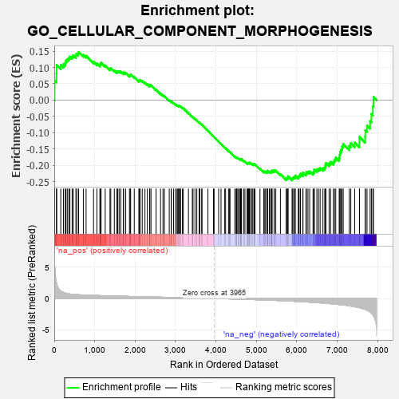
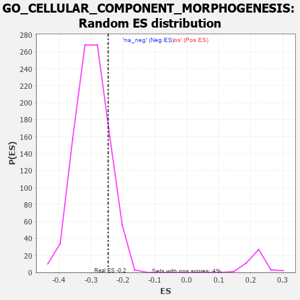

| | | Dataset | 7d |
| Phenotype | NoPhenotypeAvailable |
| Upregulated in class | na_neg |
| GeneSet | GO_CELLULAR_COMPONENT_MORPHOGENESIS |
| Enrichment Score (ES) | -0.2458905 |
| Normalized Enrichment Score (NES) | -0.8271744 |
| Nominal p-value | 0.8472803 |
| FDR q-value | 0.9835552 |
| FWER p-Value | 1.0 |
Table: GSEA Results Summary

Fig 1: Enrichment plot: GO_CELLULAR_COMPONENT_MORPHOGENESIS
Profile of the Running ES Score & Positions of GeneSet Members on the Rank Ordered List
| PROBE | GENE SYMBOL | GENE_TITLE | RANK IN GENE LIST | RANK METRIC SCORE | RUNNING ES | CORE ENRICHMENT | | 1 | SYT2 | | | 8 | 5.577 | 0.0599 | No |
| 2 | DCLK1 | | | 55 | 2.532 | 0.0816 | No |
| 3 | RAC2 | | | 60 | 2.442 | 0.1077 | No |
| 4 | CSRP3 | | | 161 | 1.186 | 0.1079 | No |
| 5 | RHOH | | | 228 | 0.987 | 0.1102 | No |
| 6 | ULK1 | | | 272 | 0.875 | 0.1142 | No |
| 7 | SHOX2 | | | 288 | 0.842 | 0.1215 | No |
| 8 | ARX | | | 322 | 0.782 | 0.1258 | No |
| 9 | LGR6 | | | 360 | 0.738 | 0.1291 | No |
| 10 | BAX | | | 387 | 0.711 | 0.1335 | No |
| 11 | NUBPL | | | 442 | 0.665 | 0.1339 | No |
| 12 | LRP1 | | | 470 | 0.648 | 0.1375 | No |
| 13 | DOK6 | | | 536 | 0.616 | 0.1359 | No |
| 14 | SRF | | | 542 | 0.615 | 0.1419 | No |
| 15 | RAPH1 | | | 592 | 0.597 | 0.1422 | No |
| 16 | FBXW8 | | | 601 | 0.594 | 0.1476 | No |
| 17 | ID1 | | | 719 | 0.555 | 0.1387 | No |
| 18 | RERE | | | 787 | 0.536 | 0.1359 | No |
| 19 | DVL3 | | | 971 | 0.490 | 0.1178 | No |
| 20 | MEF2C | | | 1054 | 0.473 | 0.1124 | No |
| 21 | SRC | | | 1128 | 0.459 | 0.1081 | No |
| 22 | EMX1 | | | 1143 | 0.455 | 0.1112 | No |
| 23 | GAB1 | | | 1158 | 0.453 | 0.1144 | No |
| 24 | WDR36 | | | 1260 | 0.437 | 0.1062 | No |
| 25 | DRGX | | | 1378 | 0.414 | 0.0957 | No |
| 26 | DOCK7 | | | 1398 | 0.410 | 0.0978 | No |
| 27 | IFRD1 | | | 1486 | 0.392 | 0.0909 | No |
| 28 | SOS1 | | | 1547 | 0.384 | 0.0874 | No |
| 29 | CNTN4 | | | 1571 | 0.379 | 0.0886 | No |
| 30 | RNF6 | | | 1605 | 0.373 | 0.0884 | No |
| 31 | TPPP | | | 1646 | 0.365 | 0.0873 | No |
| 32 | ERCC2 | | | 1712 | 0.354 | 0.0828 | No |
| 33 | TRAK1 | | | 1714 | 0.354 | 0.0865 | No |
| 34 | LLPH | | | 1768 | 0.343 | 0.0835 | No |
| 35 | SMAD4 | | | 1860 | 0.326 | 0.0753 | No |
| 36 | NEO1 | | | 1879 | 0.323 | 0.0766 | No |
| 37 | PAK3 | | | 1889 | 0.322 | 0.0789 | No |
| 38 | BRSK2 | | | 1979 | 0.308 | 0.0709 | No |
| 39 | FOXD1 | | | 2093 | 0.292 | 0.0595 | No |
| 40 | BMP7 | | | 2107 | 0.290 | 0.0610 | No |
| 41 | ISLR2 | | | 2124 | 0.287 | 0.0621 | No |
| 42 | DDR1 | | | 2176 | 0.280 | 0.0586 | No |
| 43 | CREB1 | | | 2243 | 0.269 | 0.0531 | No |
| 44 | WASF1 | | | 2303 | 0.259 | 0.0484 | No |
| 45 | SIN3A | | | 2361 | 0.251 | 0.0438 | No |
| 46 | MPP5 | | | 2362 | 0.251 | 0.0465 | No |
| 47 | LHX9 | | | 2393 | 0.247 | 0.0454 | No |
| 48 | NUMB | | | 2519 | 0.224 | 0.0318 | No |
| 49 | GNPAT | | | 2629 | 0.208 | 0.0201 | No |
| 50 | DSCAM | | | 2689 | 0.200 | 0.0147 | No |
| 51 | SLIT2 | | | 2724 | 0.195 | 0.0125 | No |
| 52 | NR2E1 | | | 2844 | 0.177 | -0.0009 | No |
| 53 | MTM1 | | | 2893 | 0.168 | -0.0052 | No |
| 54 | FGFR2 | | | 2895 | 0.167 | -0.0035 | No |
| 55 | RAB10 | | | 2952 | 0.157 | -0.0090 | No |
| 56 | UNC5C | | | 2997 | 0.150 | -0.0130 | No |
| 57 | OPA3 | | | 3035 | 0.145 | -0.0161 | No |
| 58 | FEZ1 | | | 3055 | 0.142 | -0.0170 | No |
| 59 | MAP2 | | | 3074 | 0.140 | -0.0178 | No |
| 60 | LHX3 | | | 3092 | 0.138 | -0.0185 | No |
| 61 | RREB1 | | | 3099 | 0.137 | -0.0178 | No |
| 62 | MTMR2 | | | 3126 | 0.133 | -0.0196 | No |
| 63 | PAX6 | | | 3170 | 0.127 | -0.0238 | No |
| 64 | TRIO | | | 3192 | 0.123 | -0.0251 | No |
| 65 | RAB8A | | | 3319 | 0.102 | -0.0402 | No |
| 66 | KIF1A | | | 3415 | 0.088 | -0.0514 | No |
| 67 | SARM1 | | | 3432 | 0.086 | -0.0525 | No |
| 68 | CDK5 | | | 3480 | 0.080 | -0.0577 | No |
| 69 | PQBP1 | | | 3526 | 0.072 | -0.0627 | No |
| 70 | PARD3 | | | 3584 | 0.063 | -0.0693 | No |
| 71 | MAPK3 | | | 3589 | 0.062 | -0.0691 | No |
| 72 | STK25 | | | 3602 | 0.059 | -0.0700 | No |
| 73 | CCKAR | | | 3648 | 0.051 | -0.0752 | No |
| 74 | FIS1 | | | 3654 | 0.051 | -0.0753 | No |
| 75 | SPAST | | | 3801 | 0.027 | -0.0937 | No |
| 76 | TOP2B | | | 3938 | 0.005 | -0.1111 | No |
| 77 | EXT1 | | | 3954 | 0.001 | -0.1131 | No |
| 78 | ROBO2 | | | 4066 | -0.018 | -0.1271 | No |
| 79 | ABL1 | | | 4125 | -0.027 | -0.1342 | No |
| 80 | UNC5D | | | 4217 | -0.044 | -0.1454 | No |
| 81 | GPC1 | | | 4238 | -0.048 | -0.1475 | No |
| 82 | SYT17 | | | 4310 | -0.061 | -0.1559 | No |
| 83 | OPA1 | | | 4330 | -0.065 | -0.1576 | No |
| 84 | FIG4 | | | 4348 | -0.068 | -0.1591 | No |
| 85 | LRRK2 | | | 4467 | -0.087 | -0.1733 | No |
| 86 | MEF2A | | | 4499 | -0.095 | -0.1762 | No |
| 87 | ILK | | | 4510 | -0.096 | -0.1764 | No |
| 88 | NPTN | | | 4519 | -0.098 | -0.1764 | No |
| 89 | NTRK2 | | | 4543 | -0.104 | -0.1782 | No |
| 90 | ABI2 | | | 4554 | -0.106 | -0.1783 | No |
| 91 | SYT4 | | | 4590 | -0.116 | -0.1815 | No |
| 92 | GATA3 | | | 4614 | -0.120 | -0.1832 | No |
| 93 | ATOH1 | | | 4615 | -0.121 | -0.1819 | No |
| 94 | RAB21 | | | 4620 | -0.122 | -0.1811 | No |
| 95 | LMX1A | | | 4631 | -0.124 | -0.1810 | No |
| 96 | LIMK1 | | | 4684 | -0.136 | -0.1862 | No |
| 97 | LHX2 | | | 4716 | -0.143 | -0.1886 | No |
| 98 | PLCG1 | | | 4770 | -0.151 | -0.1937 | No |
| 99 | RTN4 | | | 4783 | -0.154 | -0.1936 | No |
| 100 | FLII | | | 4795 | -0.156 | -0.1933 | No |
| 101 | TNIK | | | 4804 | -0.158 | -0.1926 | No |
| 102 | TAOK3 | | | 4823 | -0.162 | -0.1931 | No |
| 103 | WDR1 | | | 4824 | -0.163 | -0.1914 | No |
| 104 | SGK1 | | | 4852 | -0.168 | -0.1930 | No |
| 105 | SLIT3 | | | 4890 | -0.175 | -0.1958 | No |
| 106 | MARK2 | | | 4899 | -0.177 | -0.1949 | No |
| 107 | MNX1 | | | 4939 | -0.186 | -0.1979 | No |
| 108 | FZD4 | | | 4940 | -0.186 | -0.1959 | No |
| 109 | SNX2 | | | 4966 | -0.191 | -0.1970 | No |
| 110 | DRD2 | | | 5088 | -0.221 | -0.2101 | No |
| 111 | HDAC6 | | | 5183 | -0.244 | -0.2195 | No |
| 112 | SMO | | | 5195 | -0.247 | -0.2182 | No |
| 113 | TMF1 | | | 5225 | -0.251 | -0.2192 | No |
| 114 | PTEN | | | 5262 | -0.261 | -0.2209 | No |
| 115 | RIMS2 | | | 5272 | -0.265 | -0.2192 | No |
| 116 | EPHA4 | | | 5273 | -0.265 | -0.2163 | No |
| 117 | CD9 | | | 5319 | -0.277 | -0.2191 | No |
| 118 | EPHA1 | | | 5349 | -0.285 | -0.2197 | No |
| 119 | CPNE9 | | | 5374 | -0.289 | -0.2196 | No |
| 120 | GRIN1 | | | 5381 | -0.291 | -0.2172 | No |
| 121 | DLG4 | | | 5388 | -0.293 | -0.2147 | No |
| 122 | CUX1 | | | 5437 | -0.304 | -0.2176 | No |
| 123 | IST1 | | | 5442 | -0.305 | -0.2148 | No |
| 124 | KIF3A | | | 5480 | -0.313 | -0.2161 | No |
| 125 | GFRA1 | | | 5594 | -0.342 | -0.2269 | No |
| 126 | SLIT1 | | | 5735 | -0.387 | -0.2406 | No |
| 127 | TLR2 | | | 5761 | -0.395 | -0.2395 | No |
| 128 | VAMP7 | | | 5777 | -0.399 | -0.2371 | No |
| 129 | TRPC6 | | | 5784 | -0.401 | -0.2334 | No |
| 130 | SZT2 | | | 5882 | -0.429 | -0.2412 | Yes |
| 131 | VLDLR | | | 5898 | -0.434 | -0.2384 | Yes |
| 132 | STK11 | | | 5922 | -0.443 | -0.2365 | Yes |
| 133 | AGFG1 | | | 5955 | -0.457 | -0.2356 | Yes |
| 134 | ACTN2 | | | 5960 | -0.458 | -0.2311 | Yes |
| 135 | RAC1 | | | 6036 | -0.484 | -0.2355 | Yes |
| 136 | EVL | | | 6052 | -0.490 | -0.2320 | Yes |
| 137 | DBNL | | | 6084 | -0.501 | -0.2306 | Yes |
| 138 | UBB | | | 6090 | -0.503 | -0.2257 | Yes |
| 139 | FEZF2 | | | 6150 | -0.519 | -0.2276 | Yes |
| 140 | ROCK1 | | | 6152 | -0.520 | -0.2221 | Yes |
| 141 | TPM1 | | | 6226 | -0.545 | -0.2255 | Yes |
| 142 | CDC42 | | | 6236 | -0.548 | -0.2206 | Yes |
| 143 | FLOT1 | | | 6276 | -0.564 | -0.2195 | Yes |
| 144 | NCAM1 | | | 6318 | -0.582 | -0.2184 | Yes |
| 145 | CDKL3 | | | 6401 | -0.618 | -0.2222 | Yes |
| 146 | PTPRD | | | 6423 | -0.629 | -0.2180 | Yes |
| 147 | ABCA2 | | | 6433 | -0.634 | -0.2122 | Yes |
| 148 | LAMA1 | | | 6496 | -0.659 | -0.2130 | Yes |
| 149 | KANK1 | | | 6536 | -0.678 | -0.2106 | Yes |
| 150 | ROBO1 | | | 6577 | -0.699 | -0.2081 | Yes |
| 151 | PTPRS | | | 6646 | -0.738 | -0.2088 | Yes |
| 152 | PAK1 | | | 6691 | -0.757 | -0.2061 | Yes |
| 153 | EGFR | | | 6708 | -0.765 | -0.1998 | Yes |
| 154 | GSK3B | | | 6719 | -0.768 | -0.1927 | Yes |
| 155 | TBPL1 | | | 6798 | -0.814 | -0.1939 | Yes |
| 156 | FHOD3 | | | 6835 | -0.834 | -0.1894 | Yes |
| 157 | MYH11 | | | 6905 | -0.870 | -0.1887 | Yes |
| 158 | LRP8 | | | 6931 | -0.889 | -0.1822 | Yes |
| 159 | DNM1L | | | 6963 | -0.913 | -0.1762 | Yes |
| 160 | MYH10 | | | 7048 | -0.966 | -0.1765 | Yes |
| 161 | ATL1 | | | 7062 | -0.972 | -0.1675 | Yes |
| 162 | CPNE5 | | | 7070 | -0.977 | -0.1578 | Yes |
| 163 | RYK | | | 7102 | -1.000 | -0.1508 | Yes |
| 164 | LDB3 | | | 7119 | -1.008 | -0.1419 | Yes |
| 165 | SYT1 | | | 7148 | -1.033 | -0.1342 | Yes |
| 166 | ANK2 | | | 7298 | -1.170 | -0.1405 | Yes |
| 167 | NGEF | | | 7335 | -1.209 | -0.1319 | Yes |
| 168 | LHX1 | | | 7431 | -1.305 | -0.1299 | Yes |
| 169 | LAMA2 | | | 7549 | -1.468 | -0.1289 | Yes |
| 170 | DCC | | | 7550 | -1.470 | -0.1128 | Yes |
| 171 | ANK3 | | | 7690 | -1.740 | -0.1116 | Yes |
| 172 | ADCY1 | | | 7695 | -1.752 | -0.0930 | Yes |
| 173 | PANK2 | | | 7736 | -1.866 | -0.0778 | Yes |
| 174 | DCDC2 | | | 7813 | -2.099 | -0.0646 | Yes |
| 175 | DLX5 | | | 7845 | -2.378 | -0.0426 | Yes |
| 176 | FYN | | | 7881 | -2.622 | -0.0185 | Yes |
| 177 | CAV3 | | | 7896 | -2.739 | 0.0096 | Yes |
Table: GSEA details [plain text format]

Fig 2: GO_CELLULAR_COMPONENT_MORPHOGENESIS: Random ES distribution
Gene set null distribution of ES for GO_CELLULAR_COMPONENT_MORPHOGENESIS